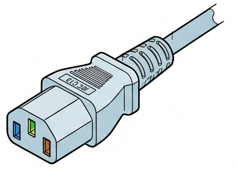

Oficina de Montagem e Conexão
AULA 11 — Diagnóstico Elétrico do Laboratório
1. Introdução
Até aqui, os conteúdos foram estudados de forma teórica e em equipamentos de exemplo. A partir desta aula, a turma trabalha nos computadores reais do laboratório — equipamentos com anos de uso, desgaste e falhas reais.
Objetivo desta aula: aplicar os conceitos de qualidade de energia, aterramento e tipos de fonte (Aula 02) para avaliar a instalação elétrica que alimenta o laboratório, antes de qualquer intervenção nos computadores.
Importante: esta aula é de observação e registro, não de intervenção. Nenhum grupo deve abrir tomadas, quadros elétricos ou desconectar fiação. Identificar problemas é o objetivo — corrigi-los é responsabilidade da gestão escolar/elétrica predial.
Um diagnóstico de hardware que ignora a instalação elétrica pode levar a conclusões erradas: um computador que reinicia sozinho pode ter problema na fonte — ou pode ter problema na tomada que alimenta a fonte. Avaliar a infraestrutura primeiro evita esse erro de diagnóstico.
2. Organização dos Grupos
- A turma será dividida em 6 grupos de 8 alunos.
- Cada grupo elege um líder, responsável por:
- Coordenar a divisão de tarefas dentro do grupo
- Preencher e entregar a ficha de diagnóstico
- Reportar ao professor qualquer situação de risco identificada (fios expostos, tomadas danificadas, cheiro de queimado)
Critério de segurança: se qualquer grupo identificar fiação exposta, tomada quebrada, cheiro de queimado ou superaquecimento visível em qualquer ponto, a equipe deve interromper a atividade naquele ponto imediatamente e reportar ao professor antes de continuar.
3. Conceitos a Aplicar (Revisão Rápida)
Antes de iniciar, retomar rapidamente os conceitos da Aula 02 que serão observados na prática:
| Conceito | O que observar no laboratório |
|---|---|
| Aterramento (NBR 5410) | Tomadas possuem o terceiro pino (terra)? |
| Polaridade do cabo de força | Fase e neutro chegam corretos na fonte através do cabo IEC? |
| Fontes genéricas vs. certificadas | A fonte do computador possui selo 80 Plus visível? |
| PFC ativo | A fonte aceita 100-240V automaticamente (chave 110/220 ausente) ou possui chave manual? |
| Filtro de linha vs. extensão comum | O equipamento conectado entre a tomada e o computador é um filtro real ou uma extensão simples? |
| Estabilizador | Há estabilizadores em uso? (lembrar: não recomendados, Aula 02) |
| Nobreak | Há nobreaks instalados? Em quais máquinas? |
3.1 Padrão de Plugue — Tripolar Americano (2P+T)
Contexto
O laboratório utiliza o padrão tripolar americano (2P+T) — também chamado de padrão NEMA 5-15 — em tomadas, plugues e estabilizadores. Esse padrão antecede a norma NBR 14136, que desde 2011 estabelece o plugue/tomada de três pinos redondos como padrão obrigatório no Brasil.
O que observar
- As tomadas do laboratório são todas no padrão 2P+T, ou há mistura com o padrão novo (3 pinos redondos)?
- Há uso de adaptadores entre os dois padrões? Adaptadores frequentemente não conectam o pino terra, mesmo que a tomada de origem o possua.
- Os estabilizadores e demais equipamentos do laboratório seguem o mesmo padrão das tomadas da parede?
Atenção: um adaptador de tomada que não replica o pino terra anula o aterramento de tudo que está conectado a ele — mesmo que a tomada da parede seja aterrada corretamente.
3.2 Verificação de Polaridade no Cabo de Força da Fonte
O que será verificado
O cabo de força que liga a tomada da parede à fonte de alimentação (PSU) possui, na ponta do computador, o conector padrão IEC C13/C14 (mesmo formato usado em monitores e outros equipamentos). Esse conector possui três contatos: fase, neutro e terra, em posições fixas definidas pelo padrão IEC — diferente da tomada de parede, aqui a posição não varia.

Observação: diferente da tomada de parede 2P+T (onde a posição de fase/neutro depende de como o eletricista instalou os fios), o conector IEC do cabo de força é padronizado de fábrica: o pino menor e mais estreito é a fase, o maior é o neutro, e o pino redondo inferior é o terra.
O ponto de verificação não é o conector IEC em si (que é padronizado), mas sim se a tomada da parede está entregando fase e neutro nas posições corretas para esse conector — ou seja, se o cabo de força, ao ser ligado normalmente, está de fato levando a fase para o pino de fase da fonte.
Procedimento (conduzido pelo professor)
- Com o computador desligado da tomada, identificar visualmente os dois pinos chatos do conector IEC do cabo de força (lado da tomada/macho).
- Conectar o cabo na tomada da parede.
- Com a chave de teste, tocar cada um dos dois pinos chatos na extremidade que vai à fonte (lado fêmea, ainda desconectado da fonte).
- O pino em que a lâmpada acende corresponde à fase — deve coincidir com o pino estreito (fase) do padrão IEC.
- Caso a fase apareça no pino largo (posição de neutro do padrão IEC), há inversão entre fase e neutro vindo da tomada da parede através do cabo.
Atenção: esta verificação deve ser feita apenas pelo professor, com o cabo desconectado da fonte durante o teste com a chave neon. Os alunos observam e registram o resultado.
Por que isso importa
- A fonte ATX com PFC ativo geralmente tolera inversão entre fase e neutro sem deixar de funcionar — por isso esse problema não costuma gerar sintomas visíveis e passa despercebido.
- No entanto, com fase e neutro invertidos, o chassi do gabinete e o fio terra podem não estar na referência esperada, o que reduz a eficácia de qualquer proteção contra choque em caso de falha de isolamento interna.
O que cada grupo registra
- Para o cabo de força do computador do seu setor: aguardar o professor realizar o teste com a chave neon na extremidade do cabo.
- Registrar se a fase corresponde ao pino estreito (correto) ou ao pino largo (invertido) do conector IEC.
4. Roteiro da Atividade (Por Grupo)
Cada grupo será responsável por avaliar a infraestrutura elétrica de uma fileira/setor do laboratório (ajustar conforme o layout real), preenchendo a ficha de diagnóstico para cada ponto de energia.
Passo 1 — Identificação do ponto de energia (5 min)
- Observar visualmente o estado físico da tomada: rachaduras, escurecimento, folga do plugue.
- Verificar se a tomada possui três pinos (fase, neutro, terra) ou apenas dois.
- Verificar se há múltiplos equipamentos ligados na mesma tomada/régua e quantos.
Passo 2 — Identificação do dispositivo intermediário (10 min)
Entre a tomada da parede e o computador, geralmente há um dos seguintes dispositivos. Identificar qual:
| Dispositivo | Como identificar visualmente |
|---|---|
| Extensão comum (benjamim/régua simples) | Sem botão liga/desliga com luz, sem fusível visível, sem certificação impressa |
| Filtro de linha | Possui botão liga/desliga iluminado, normalmente com indicação de proteção contra surtos |
| Estabilizador | Caixa maior, transformador interno (mais pesado), seletor de tensão 110/220V |
| Nobreak (UPS) | Caixa com bateria interna (peso elevado), display ou LEDs de status, emite ruído de ventilação |
Passo 3 — Inspeção da fonte do computador (15 min)
Sem desconectar nada, observar a etiqueta da fonte (visível na lateral ou traseira do gabinete, geralmente através de uma grade):
- Selo 80 Plus: há algum selo (Bronze, Silver, Gold, etc.) impresso?
- Chave de seleção 110/220V: o computador possui essa chave física na traseira?
- Se possui: indica fonte com PFC passivo (Aula 02) — a tensão deve ser conferida manualmente.
- Se não possui: indica provável PFC ativo (entrada universal automática).
- Potência declarada: qual o valor em Watts impresso na etiqueta?
- Estado físico: ventoinha da fonte gira ao ligar o computador? Há ruído anormal (chiado agudo, zumbido alto)?
Atenção: se o computador possuir a chave 110/220V, não alterar sua posição. Apenas registrar a posição atual e informar ao professor se houver suspeita de configuração incorreta (ex: chave em 220V em região de rede 127V).
Passo 4 — Registro de sintomas relatados (10 min)
Conversar com o(a) professor(a) responsável pelo laboratório ou consultar histórico, se disponível, sobre os computadores do setor:
- Algum desliga sozinho?
- Algum demora para ligar ou liga e desliga repetidamente?
- Algum apresenta tela preta sem motivo aparente?
- Alguma porta USB já apresentou falha?
Registrar essas informações na ficha — elas serão retomadas na Aula 12 (diagnóstico interno).
Passo 5 — Consolidação e entrega (10 min)
O líder do grupo revisa a ficha preenchida, garante que todos os pontos do setor foram cobertos, e entrega ao professor.
5. Ficha de Diagnóstico Elétrico (por ponto de energia)
Reproduzir esta ficha — uma para cada tomada/computador avaliado.
Ficha de Diagnóstico Elétrico
6. Discussão Final (em sala, após a coleta)
Com as fichas recolhidas, o professor pode conduzir uma discussão rápida com perguntas como:
- Quantos pontos do laboratório não possuem aterramento (terceiro pino)?
- Quantos computadores usam extensão comum em vez de filtro de linha?
- Há padrão entre os computadores com sintomas relatados e o tipo de dispositivo intermediário usado?
- As fontes sem selo 80 Plus são as mesmas que apresentam sintomas?
Observação: essa discussão prepara o terreno para a Aula 12: muitas falhas "de hardware" — incluindo USB instável — podem ter origem em alimentação elétrica inadequada (ripple alto, tensão instável), e não necessariamente em dano físico ao componente.
Síntese da Aula
| Etapa | O que foi avaliado | Conecta com |
|---|---|---|
| Tomada | Aterramento, estado físico, polaridade do cabo de força | Aula 02 — NBR 5410 |
| Dispositivo intermediário | Filtro vs. extensão vs. estabilizador vs. nobreak | Aula 02 — proteção elétrica |
| Fonte do computador | Selo 80 Plus, PFC, potência, estado físico | Aula 02 — qualidade da fonte |
| Sintomas relatados | Histórico de falhas por máquina | Prepara Aula 12 |